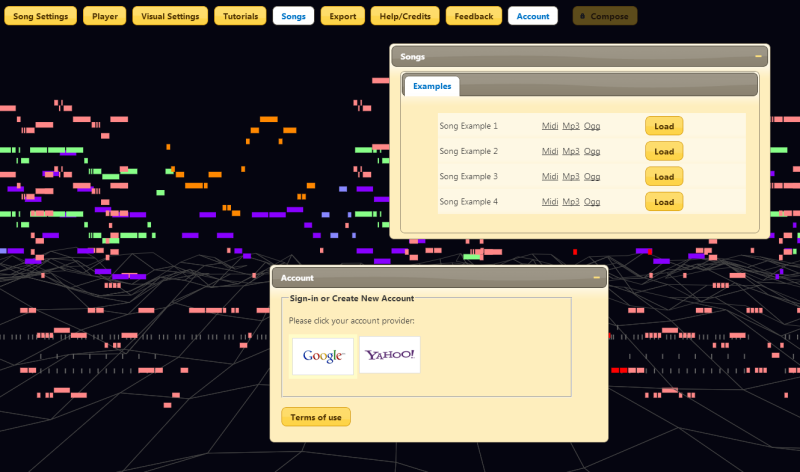
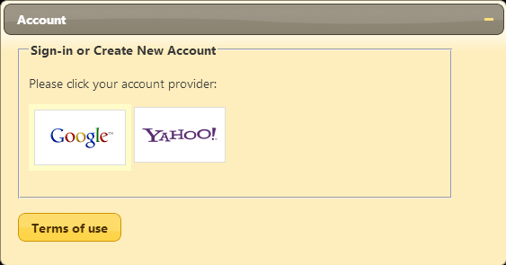
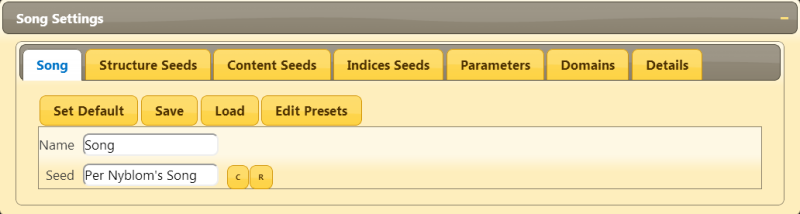
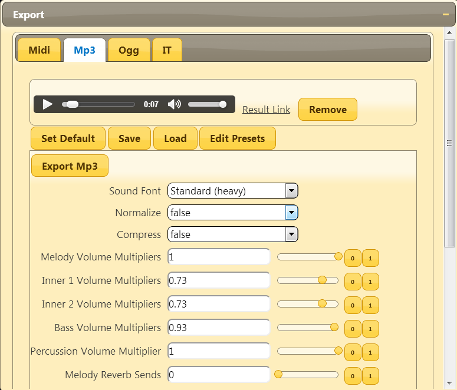

First Tutorial
Welcome to the first tutorial about Abundant Music!
"Abundant Music" is a procedural music generator that doesn't require any musical knowledge to generate music. You can generate new songs by pressing just a few buttons.
This tutorial covers an introduction to the interface, how to log in and how to render your first song.
Interface
The interface of Abundant Music consists of a lot of windows and a music visualizer. You can open and close the windows with the buttons at the top.
Try to open the "Songs" window. Here you can listen to some pre-rendered songs by clicking on the links.
In the background, you can see the music visualizer. Drag with the mouse to change the view.
Logging In
To start composing songs, you need to log in through the "Account" window. You can use a Google or Yahoo account for this. More account providers will be added later.
After you have logged in, you will have to accept the terms of use before you continue. These basically asks you to accept that all songs become public domain, which means that anyone can use them for anything (commersial stuff as well), but you can't claim copyright.
First Song
Now that you are logged in, it is time to compose your first song!
First, open the "Song Settings" window and select the "Song" tab. Then change the "Seed" property to anything (your name perhaps?) or generate a random seed by pressing the small "R" button. You should now see something like this:
The next step is to open the "Export" window and select the "Mp3" tab. Then click the "Export Mp3" button and wait for the Mp3 file to generate. When you see a little player show up, you can either play the generated Mp3 (while it is visualized in the back) or use the "Result Link" to download the file!
Mp3 and Ogg files are only stored for 20 minutes, so make sure that you download it before the time runs out if you intend to use it :)
If you can't hear anything when using the player, your browser might not support the Mp3 format. Try to use the Ogg exporter instead!
You can also generate Midi files in the "Midi" tab and use another program to render it.
A more detailed introduction to rendering and playing songs can be found in the Render and Play Songs Tutorial